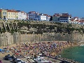
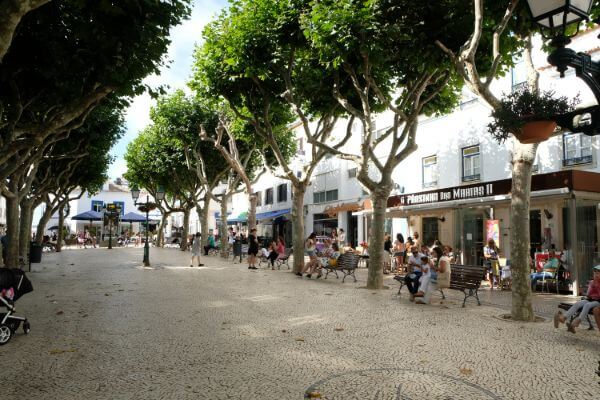

Menu: Introdução | Localização | Multimédia | Informações | Home
Fotografias | Vídeo | Poema



Ericeira - Meu berço, à flor do mar
Autora: Maria da
Assunção Freire
Oh, minha terra, do “mar salgado”
do ar
lavado, das calçadinhas
do sol mais louro
ancoradouro das
andorinhas.
Terra das pombas, filhas das ondas
em
turbilhão
asas erguidas, cruzes perdidas
na imensidão.
Terra
das praias d´areais louros
dos miradouros, a cada canto
Manhãs de bruma, tardes d´espuma
do meu encanto.
Oh, minha
terra das penedias
das invernias, tanta aflição
bravas
nortadas
fúrias eivadas de maldição.
Calvários brancos,
sabe Deus quantos
no mar sem fim
dores apagadas, santificadas
rogai por mim.
Terra d´
esperanças
onde eu de tranças, bibe de folhos
me vi crescer
cobre
os meus olhos
quando eu morrer.